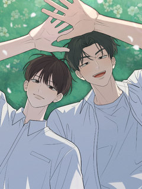
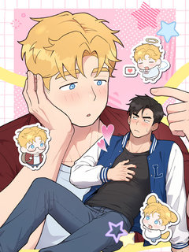
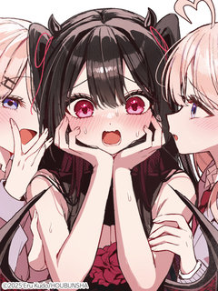
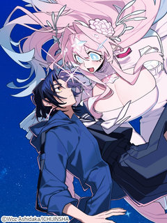

BL·GL 계약·혐관·재회 웹툰 추천 TOP 17
BL·GL 작품 중에서 계약연애, 혐관로맨스, 혐관, 재회 같은 요소가 들어간 작품만 골랐어요. 네이버웹툰·카카오웹툰·레진코믹스에서 조건에 맞는 작품 17개 중 인기 순으로 17개를 골랐어요. 인기 TOP 3: 오류탐구영역, 지상낙원의 부적응자, 몸캠 BJ의 이중생활 [연재]
2026-10-03 기준 · 성인 작품 제외
내 취향으로 더 좁혀서 추천받기 →-
1

레진코믹스오류탐구영역
중학생 때까지 전교 1등을 놓쳐본 적 없는 '오승표'는 고등학교 진학 후 '류재민'에게 전교 1등 자리를 뺏기고 만다. 전교 1등은 류재민, 전교 2등은 오승표. 아무리 열심히 공부해도 이 순서를 뒤집을 수가 없다. 태어나 처음으로 느끼는 열등감에 승표는 저도 모르게 재민을 계속 지켜…
BL·GL혐관학원물배틀연애BL레진코믹스에서 보기 → -
2
 레진코믹스
레진코믹스지상낙원의 부적응자
플로리다에 머무른지 3년째인데도 영어를 못 하는 괴짜 이탈리안 살보 비갈리. 그는 세계적인 작가임에도 호텔 대신 플로리다의 낡은 모텔에서 누군가를 기다리며 말라가고 있다. 고향 시칠리를 그리워하던 살보는 순전히 고향의 억양을 쓴단 이유로 처음 만난 건달 청소부 벤을 자신의 조수 겸 영…
BL·GL혐관까칠수연상수성장물레진코믹스에서 보기 → -
3
![몸캠 BJ의 이중생활 [연재] 표지](../../thumbs/lezhin/7011776929129080.jpg) 레진코믹스
레진코믹스몸캠 BJ의 이중생활 [연재]
본부장님, 아니 Daylightx씨, 전 당신의 비밀을 전부 알고 있어요- 밤에는 백만 팔로워를 가진 벗방 스트리머 Daylightx로, 낮에는 평범한 회사원 임성현으로 이중생활을 하던 도중, 누군가 내 정체를 알아챘다.
BL·GL재회능력공까칠수오해/착각레진코믹스에서 보기 → -
4
![레가스 [연재] 표지](../../thumbs/lezhin/4926773083701248.jpg)
-
5
![다니엘의 인어 [연재] 표지](../../thumbs/lezhin/5018707434864640.jpg) 레진코믹스
레진코믹스다니엘의 인어 [연재]
인어 연구에 진심인 다니엘은 첫 답사에서 포획한 인어가 자신을 유혹하는 듯한 느낌을 받는다. 순수한 호기심에 인어에게 다가가지만, 다니엘을 기다리고 있는 건 위험천만한 소유욕과 달콤 쌉싸름한 집착뿐이었다.
BL·GL재회인외존재유혹공순정남레진코믹스에서 보기 → -
6
 레진코믹스
레진코믹스적반하장의 허슬플레이
자신의 모교가 있는 지방으로 전근을 간 '강예솔'은 '스플리터'라는 바의 사장 '정한림'을 만난다. 바에서 정신없이 술을 마신 예솔은 다음 날 아침 한림의 집에서 깨어나고 자신이 남자와 잤다는(?) 사실에 기겁하며 도망친다. 무척 중요한 USB를 잃어버린 걸 깨달은 예솔은 어쩔 수 없…
BL·GL재회능글수무심공미남공레진코믹스에서 보기 → -
7

레진코믹스나의 천사를 찾아서
첫눈에 반해 결혼을 약속한 천사 같았던 옆집 여자아이. 10년 뒤 거구의 남성이 되어 돌아오다…!? 미국의 한 작은 마을에서 살고 있는 한국계 미국인 유진 킴. 10년 만에 옆집으로 돌아온 첫사랑 모건 라일리와 재회하지만, 눈앞에 나타난 건 거구의 금발 남성이 된 모건. 유진은 자신이…
BL·GL재회떡대수상처공평범공레진코믹스에서 보기 → -
8
![인투 더 로즈 가든(Into the Rose Garden) [개정판][연재] 표지](../../thumbs/lezhin/5311951734112256.jpg) 레진코믹스
레진코믹스인투 더 로즈 가든(Into the Rose Garden) [개정판][연재]
[4회 연재 후 1회 정기휴재] Winterbaum 작가의 대표 BL소설 <인투 더 로즈 가든> 웹툰화! 명문 귀족임을 자랑스러워 하던 에이록은 우연히 마주친 하급 귀족 가문의 클로프에게 첫눈에 반한다. 에이록은 신분 격차, 재력 차이는 물론, 같은 알파라는 금기조차 개의치 않고 다가…
BL·GL혐관복수극강공미인수레진코믹스에서 보기 → -
9
![욕수 [개정판][연재] 표지](../../thumbs/lezhin/7011777966394353.jpg) 레진코믹스
레진코믹스욕수 [개정판][연재]
욕망이 악귀가 되어 짐승 모습의 괴물, ‘욕수’가 되어 나타나는 세상. 몰락한 양반 송유건은 산에서 욕수 사냥꾼을 만나 목숨을 구한다. 그때, 남자의 눈이 붉게 변하더니... 그는 송유건의 저항에 아랑곳 않고 그를 거칠게 탐한다. 송유건은 그것으로 끝인 줄 알았지만, 곧 그와 재회하게…
BL·GL계약연애혐관성실수동정수레진코믹스에서 보기 → -
10
![이자율 50% [개정판][연재] 표지](../../thumbs/lezhin/7011761200863486.jpg) 레진코믹스
레진코믹스이자율 50% [개정판][연재]
[매월 10, 20, 30일 연재] 신인 감독 이서림은 최근 골머리를 앓고 있다. 요즘 가장 잘나가는 인기 배우 이선오가 서림의 작품에 캐스팅된 이후 작품 활동에 전혀 참여하지 않고 있기 때문. 이대로라면 투자뿐만 아니라 제작까지 무산될 위기인데... 하지만 서림에겐 비장의 카드가 있…
BL·GL재회순정남현대물미남공레진코믹스에서 보기 → -
11
![테소로 오브 더 가이드 [개정판][연재] 표지](../../thumbs/lezhin/7011761210008340.jpg) 레진코믹스
레진코믹스테소로 오브 더 가이드 [개정판][연재]
이능력자 폭주율이 높기로 소문이 자자한 F12 센터. 그곳으로 발령받게 된 진단 검사관 '백시진'. 첫 출근한 시진은 행정과라며 신분을 숨긴 채, 의도적으로 접근한 A급 가이드 '정태율'을 만나게 된다. \\
BL·GL재회강공연상수연하남레진코믹스에서 보기 → -
12
![롭이어 집사 [연재] 표지](../../thumbs/lezhin/7011786604160902.jpg) 레진코믹스
레진코믹스롭이어 집사 [연재]
세간의 시선 속 옌이는 완벽하고 사려 깊은 오메가 아내였지만, 남편 루상진에게는 그저 능력이 뛰어난 경호원이자 가엾게 여길 가치도 없는 흔해 빠진 토끼 수인일 뿐이었다. 각인이 강제로 지워진 비참한 관계 속에서도 과거 루상진이 다정했던 기억을 붙잡으며, \\
BL·GL계약연애짝사랑무심공미남공레진코믹스에서 보기 → -
13
![헤어진 적 없는 [개정판][연재] 표지](../../thumbs/lezhin/7011749286845557.jpg) 레진코믹스
레진코믹스헤어진 적 없는 [개정판][연재]
집안이 기울고 아르바이트를 전전하던 '서은하'는 길거리에서 우연히 오랜 첫사랑이자 전 여자친구 '한원서'를 만나게 된다. \\
BL·GL계약연애혐관친구>연인첫사랑레진코믹스에서 보기 → -
14

레진코믹스에구치네 순정 서큐버스
“에로란 대체 뭐야!!!!!” 지식은 있으나 에로를 전혀 이해하지 못하는 만화가 에구치 히비키. 에로란 대체 무엇인지 고민하던 히비키는 마찬가지로 에로에 대해 고민 중이던 서큐버스 미아와 만난다. 어딘가 닮은 두 사람은 ‘진정한 에로’를 이해하기 위해 협력하게 되는데…? 풋내기 만화가…
BL·GL계약연애현대물첫사랑친구>연인레진코믹스에서 보기 → -
15

레진코믹스아주 깊은 우주에서 사랑을 담아
‘네 눈에 나는 어떻게 보여?’ 중학교 시절 트라우마로 인해 남들과 거리를 두며 혼자서 학교생활을 하는 테라다테 렌. 그런데 어느 날, 머나먼 행성의 공주님 루루가 찾아와 텐의 신부가 되겠다고 말한다. 조용하고 고독했던 텐의 청춘은 크게 달라지기 시작하는데... 넓은 우주에서 만나게…
BL·GL계약연애인외존재현대물성장물레진코믹스에서 보기 → -
16
![올 어바웃 유어 러브 [개정판][연재] 표지](../../thumbs/lezhin/5964443436122112.jpg) 레진코믹스
레진코믹스올 어바웃 유어 러브 [개정판][연재]
오랜만에 나간 동창회에서 이원은 전 여자친구의 청첩장을 받는다. 복잡한 마음인 이원 앞에 나타난 태은은 갑자기 그에게 원나잇 제안을 한다. 얼떨결에 태은과 자게 된 이원은 그 후로도 태은과 밤을 보내게 되고, 함께하는 시간이 길어질 수록 태은에 대한 호기심은 더욱 커진다. 같은 학교에…
BL·GL재회BL설렘폭발친구>연인레진코믹스에서 보기 → -
17
![찬란한 어둠 [개정판][연재] 표지](../../thumbs/lezhin/5249022909677568.jpg) 레진코믹스
레진코믹스찬란한 어둠 [개정판][연재]
[매월 5,15,25일 연재 / 5화 연재 후 1회 정기 휴재] 불우한 성장기를 극복하고서 천재 바이올리니스트로 세계에 이름을 알린 정난우. 그는 겹겹이 쌓인 내면의 어둠을 벗어나지 못하여 힘들어한다. 할리우드 미남 배우이자 바람둥이로 소문난 에녹 밀리건. 그는 매력적인 얼굴 외에 연…
BL·GL재회설렘폭발미인수강공레진코믹스에서 보기 →